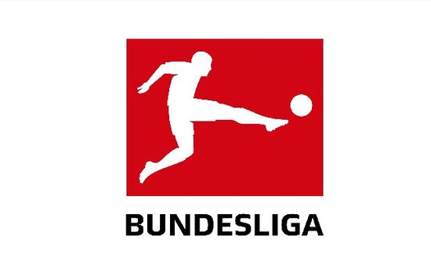

Alemania
La Bundesliga (en alemán: Fußball-Bundesliga es la competición entre los equipos de fútbol de la máxima categoría de Alemania. Se empezó a disputar en 1963, a partir de la unificación de los antiguos campeonatos locales llamados Oberligen. Junto a la Zweite Bundesliga y Dritte Bundesliga, forman las tres divisiones nacionales del fútbol profesional en Alemania.
Las temporadas se juegan de agosto a mayo, clasificándose todos los equipos de la Bundesliga a la DFB-Pokal. El ganador de la competición se clasifica para disputar la DFL-Supercup frente al campeón de la Copa.
